泰国珍寺修行、この日訪れたのは古都アユタヤである。
まずは20年ぶりにアユタヤの遺跡に行ってみた。
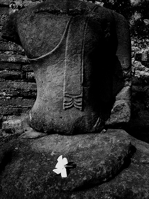

相変わらずギンギンの観光地だ。
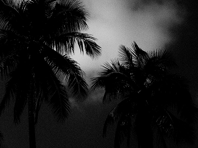
そんな世界遺産から西へ西へと移動。バンノムコーにある
ワットバンノムコーに向かう。
タイの田舎では村の名前を冠した寺院がよくある。
もちろん村を代表する寺だから、ということもあるが大抵はその村に1箇所しか寺がないためであると推察される。
辺鄙な田舎なのに境内には大勢の人でごった返している。
どうやら
ローカルでは人気のお寺のようだ。少し境内の様子を見てみよう。
アユタヤを象徴するような鶏の置物がお出迎え。
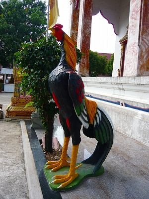
菩提樹の根元にはナーガを背負った釈迦が座っている。頭上にはサンジャオと思しき祠が乗っていた。
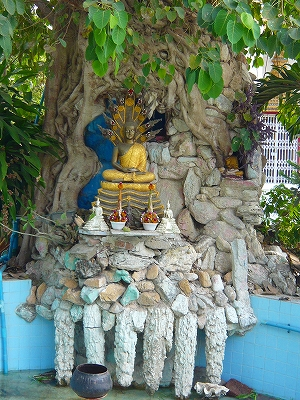 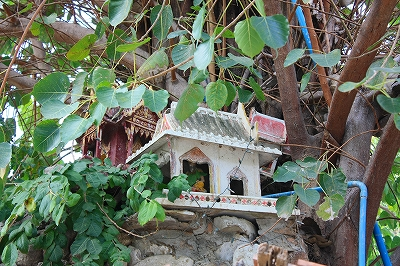
（※サンジャオとかサンプラブラームとかなんじゃい、という方はこちらへ）
んで、お供え物もナーガっぽい。
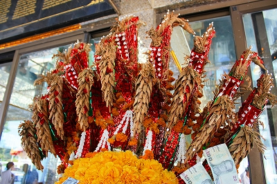
まばゆいばかりの仏塔と四面仏を祀るサンプラブラーム。
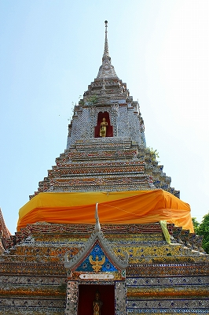 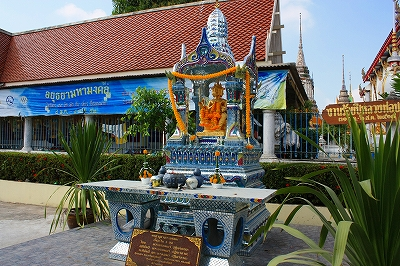
いかにこのお寺が資金を潤沢に持っているかが伺える。
お釈迦サマの偉大さを示すレリーフ。瞑想する周りで誘惑する半裸の女性。
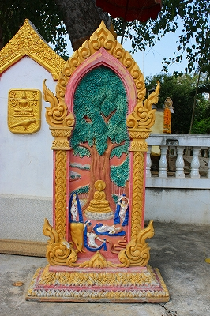
勿論我らがスーパーヒーロー、お釈迦さマンはそんなの一切シカトですわ。
え～と。コレはタイの民間信仰の神さま。名前は知らないが、家とワンセットになっているみたい。
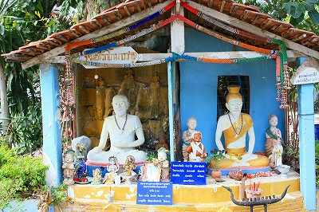
トイレ？
チョット濃厚過ぎて入れませんでした…ガウディみたいな煙突がチャーミング。
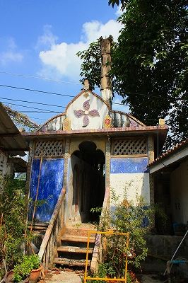
四面仏なれどお顔がタイの鬼、ヤックになっている。
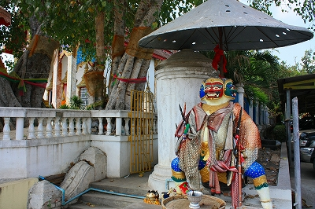
さて、そんなこんなで人が大勢集まっている場所に移動。
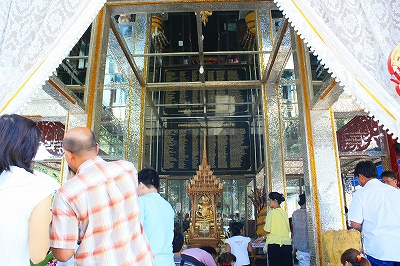
内部は鏡張りで大層ゴージャス。その中には金箔が貼られまくって金ぴかになっているお坊さんの像が。
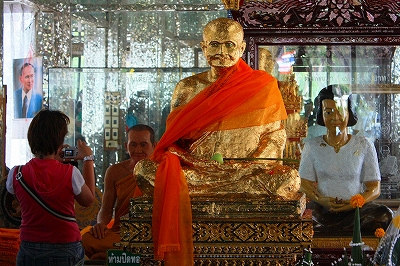
そうやら
人気の高僧のようで、皆さんこの像を拝んでいる。そうか。ありがたい人なのか。
それ以上に
右の女性の像や左のお坊さんの像の半端なリアル感が印象的だった。
外にも金ぴかのお坊さんがいたがこちらは人気イマイチでした。
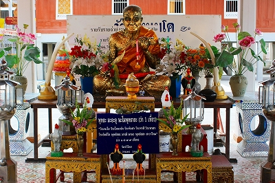
お堂の周りをうろついているとド派手な一画が目に飛び込んできた。
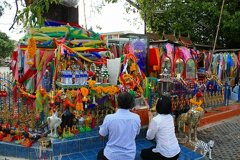
木を布でグルグル巻きにして供え物をするのはタイでよく見る光景だが、ここのは少し様子が違う。
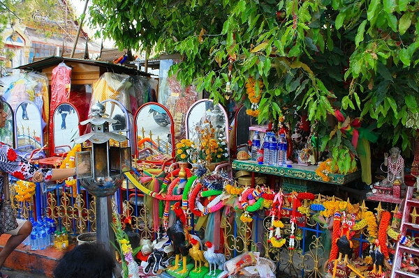
鏡が並んでいるじゃないか。
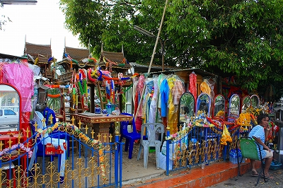
さらにその後ろには女性物の服が架かっている。
おお、そっか。先にも紹介した
ナーン・ナーク信仰なのか。
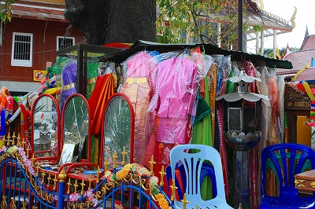
ナーンナークはバンコク郊外に伝わる幽霊話に端を発した民間信仰。
女性の幽霊（精霊）を慰めるためにグッズを奉納するので華やかな服を奉納するのだが、ここでは鏡、しかも大型の姿見を奉納している。
まあ、女性の精霊に喜んでいただこう、という気持ちの表れなのだろう。
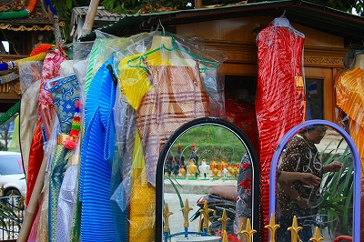
さらにバービー人形が奉納されているじゃないか。
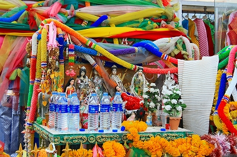
…と思ったらチョット違うみたい。
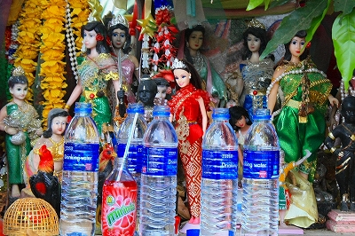
バンコク以外でもナーンナーク信仰の存在が確認できて大変有意義な訪問であったぞ。
んで、その日の夜になって気が付いたのだが…
あああっ、俺この寺に地獄と大仏を見に来たんだっけ～～～～！
完全に忘れてた～～～！！！
…この旅最大の不覚であった。
海より深く反省してま～す。